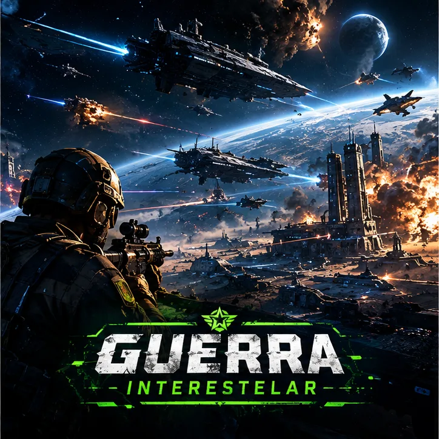

Guerra Interestelar
Campanha 2 · solo e offline · só abre depois de terminar o Anexo 7. A guerra sai da Terra: cinco combates contra os Rubros, a raça que respondeu ao farol dos cristais lunares.
O farol
A cura chegou ao mundo, mas os cristais lunares que a completaram não eram só ingredientes: eram um farol. Alguém, lá fora, ouviu o chamado. O Comando Interestelar (CIE) assume o que sobrou da Unidade 7 e recruta quem derrubou a UMBRA.
Os Rubros
Soldados de pele rubra, sem medo e sem ordens a esperar. Eles pousam onde ninguém olha e usam a infraestrutura humana como antena para o farol. Cada combate é contra bots com a dificuldade que você escolher: nos capítulos finais, mesmo no máximo, eles ganham mais vida e dano.
As operações
Corredor de simulação
Antes de pisar em outro mundo, todo operador passa por 5 minutos de duelo contra o drone de treino SPARRING. No painel, uma linha pisca em vermelho: sinal externo confirmado.
Infiltração no Morro
Primeiro foco Rubro numa favela. Você e um aliado do CIE contra dois Rubros, em Tático com bomba de pulso. O sinal não morreu: só mudou de lugar.
Poeira Vermelha
Uma pista improvisada no deserto, sob tempestade de poeira. Mesmo time de dois, bots mais preparados. Nos destroços, o primeiro fragmento de tecnologia que não é da UMBRA.
Superfície Lunar
A base brasileira virou cabeça de ponte. Você e um aliado contra três Rubros, em baixa gravidade e sem lugar para recuar. Troféu de guerra: o traje Alienígena.
Pedreira — o ninho
O ninho, o gerador do farol e os melhores soldados Rubros. Você lidera dois aliados contra três Rubros de elite, em Tático com bomba. Se o farol se apagar, ninguém mais vai ouvir a Terra.
O fim
A pedreira vira uma cratera de luz vermelha, e então escuridão. O farol se apaga. Em algum lugar do espaço, uma frota inteira vira para outro rumo. O CIE entrega ao vencedor uma honra única: o croma Alien Rubro. A próxima campanha é A Reconstrução, que só abre quando as duas primeiras terminam.
← Voltar às campanhas